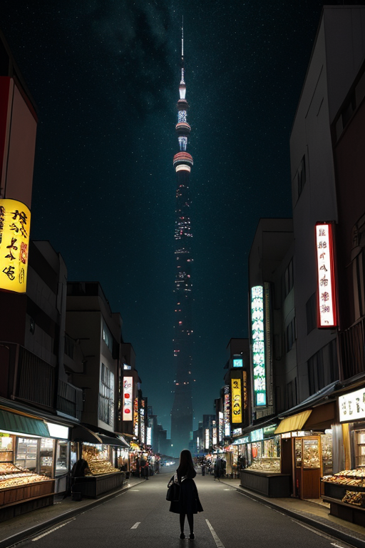
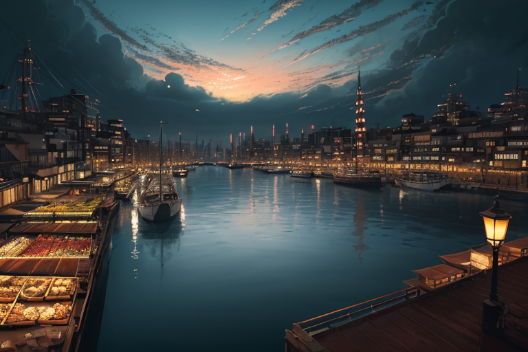
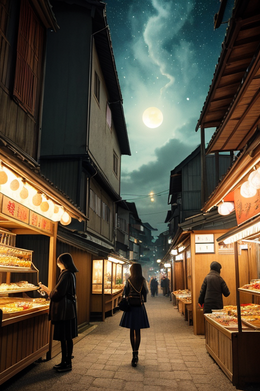

第一章 現実の福岡
あなたはまだ気づいていない。この土地にも、王がいることを。
玄界灘の風が、志賀島の松を揺らす。古代、金印がもたらされたこの島は、常に外海への玄関だった。今、その波の下では、プレートがゆっくりと歪みを蓄えている。門司港レトロのレンガ倉庫群は、海峡を隔てて本州を望み、かつての交易の活気を静かに伝える。ここは境界の地だ。海と陸、九州と本州、内と外の狭間。
その狭間で、一人の調整者が立っていた。黒と金の紋章を纏った王、フクオカリア・ゲートウェイである。彼は感情を持たないはずだった。しかし、この土地から沸き上がる野心——外へ、海へ、未知へと向かう人々の膨大な「覚悟」の密度が、彼の内部に微かな共鳴を生じさせていた。彼の役割は、この歪みの列島の一部である地盤のストレスを、ほんの少し分散させること。巨大な力そのものを止めることはできない。ただ、境界でうごめくエネルギーを、門のように開閉し、調整する。
今、彼は海峡を見つめながら、自らに問うていた。外へ出る覚悟は、あるか？ それはこの地に生きる者たちへの問いであり、歪みと向き合う自らへの問いでもあった。

第二章 歪みの兆候
玄界灘の風が、志賀島の金印公園を吹き抜ける。水平線の向こうには、かつて「蒙古」と呼ばれた巨大な歪みが押し寄せた方角がある。二度にわたる元寇は、この地に「外圧」という概念を深く刻んだ。今、王はその海峡を隔てた地盤の下で、異なるプレートが接する境界線に生じる歪みを感じ取っていた。外部からの力が、内部の安定を脅かす前兆だ。
中洲の屋台街の喧噪は、夜の帳と共に深まる。人々がもつ鍋を囲み、熱気と笑い声を交わすその下では、地中を流れる微細なエネルギーの乱れが、妖精たちによって注意深く監視されていた。ゲートリアは人流の波を、ハカタリアは地脈の流れを、それぞれ調整する。彼らの働きは、巨大な力の前では儚い。それでも、ほんの少しの遅延、ほんの少しの分散が、逃げ惑う一瞬を生むことを知っている。
王は福岡タワーの展望室から、街の灯りを見下ろした。外へ開かれたこの街は、常に外からの影響を真っ先に受ける。覚悟とは、その影響とどう向き合うか。逃げるか、受け入れるか、それとも自らも外へ出て行くか。黒と金の紋章が、彼の胸で微かに輝いた。

第三章 王の葛藤
中洲の屋台街に、異国の匂いが混じった。観光客の笑い声、商人の熱弁、それらは全て「外」からもたらされるものだ。玄関王は川面に揺れるネオンの灯りを見つめながら、自らの内に湧き上がる感情に戸惑っていた。挑戦心。それは彼に与えられた基盤的感情だが、今、それは「外」を受け入れるべきか、この豊かな内を守るべきかという、相反する衝動として現れていた。
先日、志賀島沖で検知された歪み。それは大陸プレートの動きに起因する、巨大な力の予兆だった。ゲートリアとハカタリアは、人流を分散させ、沿岸部からの退避経路を最適化する調整に奔走した。王ができるのは、その力を完全に止めることではなく、衝突の「間」をほんの少しだけ引き延ばすこと。その一瞬が、どれだけの命を繋ぐか。
「受け入れることも、拒むことも、どちらも『覚悟』です」
ゲートリアが呟いた。門司港レトロに停泊する船は、かつてこの地から世界へ、世界からこの地へ、野望と恐怖を運んだ。王は、黒と金の紋章に手を当てた。外へ出るとは、自らが変容することを意味する。この地が古来、繰り返してきた選択を、今、彼自身が迫られていた。

第四章 妖精との対話
中洲の屋台街は、夜の帳と共に人々の熱気で満たされる。ゲートリアは、もつ鍋の湯気の向こうで、王を見つめていた。
「覚悟とは、『失うこと』を計算に入れることです」
彼女の声は、屋台の喧噪を切り裂くように静かだった。
「この地は、古くから外との接点でした。太宰府の政庁も、元寇の船団も、全ては『外』から来た。受け入れたもの、拒んだもの。その全てが、今のこの街の匂いや味を形作っている。博多ラーメンの白濁スープも、明太子の赤い辛さも、異なるものが混ざり、時に衝突し、変わっていった結果です」
王は、隣で笑いながら一杯を傾ける人々の輪を見た。妖精は続けた。
「外へ出るとは、この『混ざり』を選ぶこと。純粋なままではいられない。自分が何者か、わからなくなる瞬間さえある。でも」彼女は、王の黒と金の紋章を一瞥した。「その混沌こそが、新たな命を生む土壌。あなたが微調整する『間』は、衝突そのものを消すのではなく、混ざる『速度』を調整している。速すぎれば粉砕され、遅すぎれば何も生まれない」
王は、手に持った湯飲みの縁に触れた。熱かった。
第五章 微調整と余韻
門司港レトロの埠頭に、異なる時間が混在していた。レンガ造りの旧建物と、対岸の現代的な工場群。ここは、かつて大陸への玄関口だった。王は埠頭の端に立ち、潮風に黒い外套を翻させながら、目を閉じた。感覚は、海峡を渡るフェリーの航路、観光客の足取り、歴史を語る看板の前で立ち止まる人々へと拡がる。彼は、外から来るものと内から出ようとするものの、流れの「速度」を感じ取っていた。速すぎる衝突は混乱を生み、遅すぎる停滞は腐敗を招く。彼の仕事は、その「間」を、ほんの少し調整することだ。
一団の修学旅行生が、興奮した声を上げて埠頭を駆け抜けようとした。その直前に、一羽の鴎が目の前を横切り、彼らは自然と足を止めた。ほんの数秒の遅れ。その隙に、ゆっくりと歩く老夫婦のグループが先を通り過ぎた。衝突は起きなかった。ただ、すれ違った少年が老人に会釈をし、老人がかすかに笑みを返した。ごく小さな、混ざりの瞬間。
王は目を開けた。調整は終わった。彼自身の中にも、外へ向かう野心と、この地を守りたいという未熟な郷愁が、静かに混ざり合っていた。完全な覚悟など、ない。ただ、その混ざり合う過程そのものが、彼の在り方なのだと、今は思えた。彼は踵を返し、港の喧騒へと歩みを消した。
あなたの町にも、王がいる。